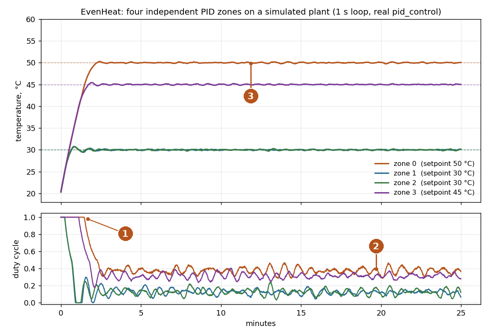
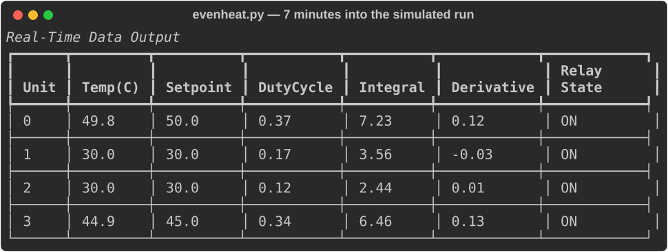

Project summary · 2026-11-01 · working repository kept private
EvenHeat: four-zone PID heating with Phidgets
One Python script and one JSON file drive four heating elements, each with its own sensor and PID loop, so a heated enclosure holds an even temperature instead of one hot spot.
The problem I wanted to solve
The target was a semi-spherical aluminium tool intended for composite enclosure fabrication. One heater and one thermostat on a shape like that gives you a hot spot and cold corners. I wanted an even temperature field across the tool, so the controller drives four heating elements, each paired with its own temperature sensor and its own PID loop. The configuration places the elements in space (one above the centre, three in a triangle lower down) and gives each zone its own setpoint, so the geometry is compensated rather than averaged away.
Demonstration
The controller was built and commissioned in 2024 on that tool, with all four Phidget heater outputs and temperature sensors connected and checked. That bench is not set up at the moment, so the demonstration below runs the real pid_control() function (extracted from the script by AST, not retyped) against a simulated first-order thermal plant per zone, with the real config.json gains and setpoints and the real one-second loop. The traces show how the controller behaves, not how the tool did.

- Every zone starts saturated at 100 % duty: a 30 °C error times Kp = 0.1 is already past the 0–1 output clamp.
- Once the error is small the integral term carries the steady-state duty (about 0.37 for the 50 °C zone). The ±10 anti-windup clamp bounds how far the integral can run during the saturated warm-up.
- All four zones settle within ±0.2 °C of their setpoints and stay there.

Architecture and my contribution
config.json (presets: elements, sensors, per-zone PID gains, geometry)
└─ evenheat.py
├─ Phidget22 VINT hub, port 0: 4 × DigitalOutput (heaters, PWM duty cycle)
├─ Phidget22 VINT hub, port 5: 4 × TemperatureSensor
├─ 1 s loop: read 4 temperatures → 4 × PID → 4 duty cycles
└─ rich table on the terminal
- Mine: the whole controller and its configuration, one Python script and one JSON file, written in PyCharm in late 2024 and run on the tool with the Phidget devices connected.
- Agent assistance: none in the control logic. In October 2026 a Claude Code session reviewed the code, packaged it as a git repository with a sensible ignore list and wrote the documentation; in November 2026 it produced this summary and the simulation above.
What works today, what remains experimental
| Status | Detail |
|---|---|
| Per-zone PID with anti-windup, output as a PWM duty cycle. | |
| Preset selection from the command line; gains and setpoints per zone in the config. | |
| Live terminal table with temperature, setpoint, duty, integral and derivative per zone; clean shutdown closes every channel. | |
| The spatial model: element positions, heat-map bounds and temperature scale are in the config, but nothing renders a heat map yet. | |
| Data logging is defined but never called, so no recorded run of the tool exists to re-tune the gains against. | |
| No safety layer independent of the script: no over-temperature cutoff, sensor-fault handling or watchdog. | |
| The loop assumes exactly 1 s per iteration; the derivative acts on raw error and kicks on setpoint changes. |
Representative code
The control step is deliberately small. The two clamps are the design: the integral is bounded so a long saturated warm-up cannot wind it up, and the output is bounded to what a duty cycle can express. Everything else (which zone, which gains, which setpoint) comes from the config, so the loop body never changes when the enclosure does.
# PID control function with anti-windup
def pid_control(setpoint, current_temp, prev_error, integral, Kp, Ki, Kd):
error = setpoint - current_temp
integral += error
integral = max(-10.0, min(10.0, integral)) # Anti-windup
derivative = error - prev_error
output = max(0, min(1, Kp * error + Ki * integral + Kd * derivative))
return output, error, integral
# ... inside the 1 s loop: one independent controller per configured unit
for unit in config["units"]:
idx = unit["index"]
setpoint = unit["setpoint"]
Kp, Ki, Kd = unit["Kp"], unit["Ki"], unit["Kd"]
duty_cycle, prev_errors[idx], integrals[idx] = pid_control(
setpoint, current_temps[idx], prev_errors[idx], integrals[idx], Kp, Ki, Kd
)
heating_elements_by_index[idx].setDutyCycle(duty_cycle)The next engineering step is visible in the simulation: add a real dt to the loop and take the derivative on the measurement rather than on the error, then re-tune against a recorded run once the tool is back on the bench.